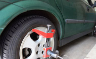
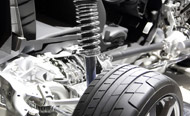

Reparaciones y mantenimientos
Importancia de realizar los servicios
El mantenimiento preventivo es una parte fundamental para asegurar un correcto funcionamiento del vehículo y prevenir problemas mecánicos. Los servicios periódicos permiten detectar y solucionar posibles fallas antes de que se conviertan en problemas mayores y costosos de reparar.
El servicio a un carro se recomienda cada 10,000 kilómetros o cada año, lo que ocurra primero. Sin embargo, esto depende del uso del vehículo y de las recomendaciones del fabricante.
Servicios de reparación
La limpieza de inyectores y sensores es importante para que el motor de un vehículo funcione bien.
La limpieza de inyectores es un proceso que sirve para eliminar el exceso de impurezas que se acumulan en los cilindros del motor.
El mantenimiento adecuado de los frenos incluye la revisión periódica de componentes críticos como discos, pastillas y líquido de frenos. Algunos signos que indican la necesidad de servicio de frenos son: el pedal del freno se siente "más suave" o rechinidos al conducir y al frenar.

La rotación de los neumáticos es un procedimiento de mantenimiento que implica mover cada neumático a una posición diferente en el vehículo. Se recomienda rotar los neumáticos aproximadamente cada 8.000 km o 10.000 km. La inspección y la rotación regulares de los neumáticos pueden extender su vida útil y evitar problemas.
Es importante revisar un automóvil para prevenir posibles problemas mecánicos en la carretera, evitar reparaciones costosas, mejorar la seguridad, la eficiencia del combustible y contribuir a la conservación del vehículo
Garantía
Garantía de las reparaciones
en un servicio automotriz para reparaciones de componentes mecánicos, afinaciones y frenos es de 30 días o 2,000 kilómetros.

- Las piezas nuevas suelen tener una garantía del fabricante, que cubre defectos o fallas durante un período de tiempo después de la compra.
- La garantía comienza desde la fecha de entrega del vehículo
- Las reparaciones de motor, transmisión y diferencial suelen tener una garantía de 6 meses o hasta 10,000 kilómetros, lo que ocurra primero.
Suspensión
El servicio de suspensión automotriz incluye: Revisión de todos los componentes de la suspensión, Inspección de amortiguadores y determinación de su vida útil, Reemplazo de piezas desgastadas, Ajuste de piezas.
Leer más